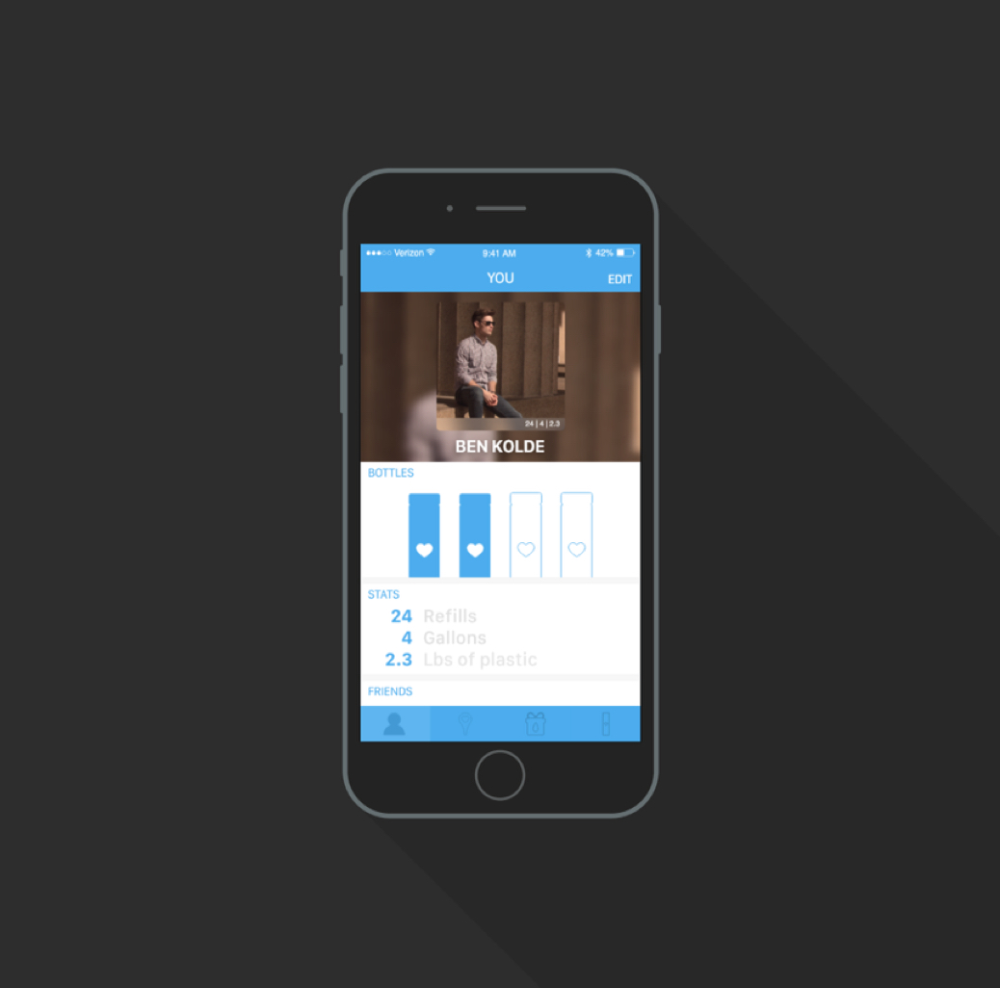
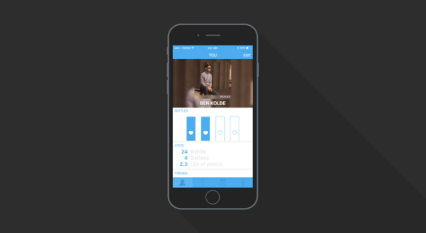
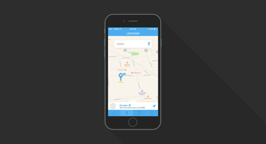
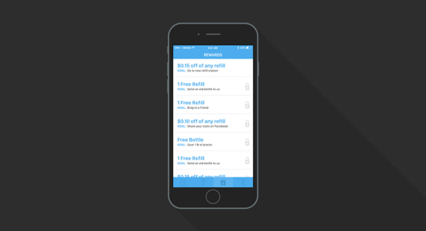
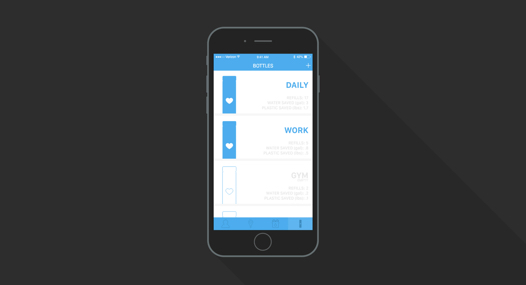

SMPLY WATR
This is a project I did for my graphic design prototyping class. The goal was to create a mobile app to go along with a water bottle we designed in the previous project. The app would get people to drink more water.

I actually created an entire business model for my water bottle/app. SMPLY WATR sells a water bottle that customers can refill in stores. Everythign is electronic and connected to your bottles so it is easy to track how much water waste you save and plastic you conserve. This is the account screen. This is where the user is able to edit their account info, see all their stats, and see their rankings against their friends. The user can even brag and chat to their friends. This feature was developed to give social aspect to the app to encourage drinking more water.

In order to get the stats and even rewards the business needed a way to track how many times the user refills their bottle. This is accomplished through a fountain in grocery stores and other places. The user can search for these places in the locations tab in the app. Through this screen the user can type in their address or even use their current location to find the closest fountain. They can also swipe up on the tab at the bottom if they want to see a full list of stores near them with the fountain. Another feature that I added was the ability for the user to see if they could redeem their rewards at certain locations. So I added a little marker next to the pins if a reward was available there.


The rewards function was created to give the user something to work towards. By providing rewards such as "free bottles with the return of an old one" or "free refills" we are encouraging people to be more responsible about how they consume water. The page has a straightforward and easy to use design. They are listed vertically. The locks on the side represent the rewards that the user hasnt yet unlocked. Redeeming the reward is the easiest part. Simply go to a refill station, it will recognize the bottle when they go to refill it and the reward will be automatically applied when they go to check out.
The bottle screen allows the user to see all of the different bottles that they are currently using. It tells them which ones are emtpy, as well as their stats for each bottle. The user an also scan the barcode of a bottle they recently purchased to add it to their account. This screen was designed to provide an at-a-glance look to the bottles that the user has.

Takeaway
The project taught me how to go above and beyond the required work Creating an entire business/business model to go along with the water bottle was something that I didn't have to do but it allowed the entire project to tie together much easier.